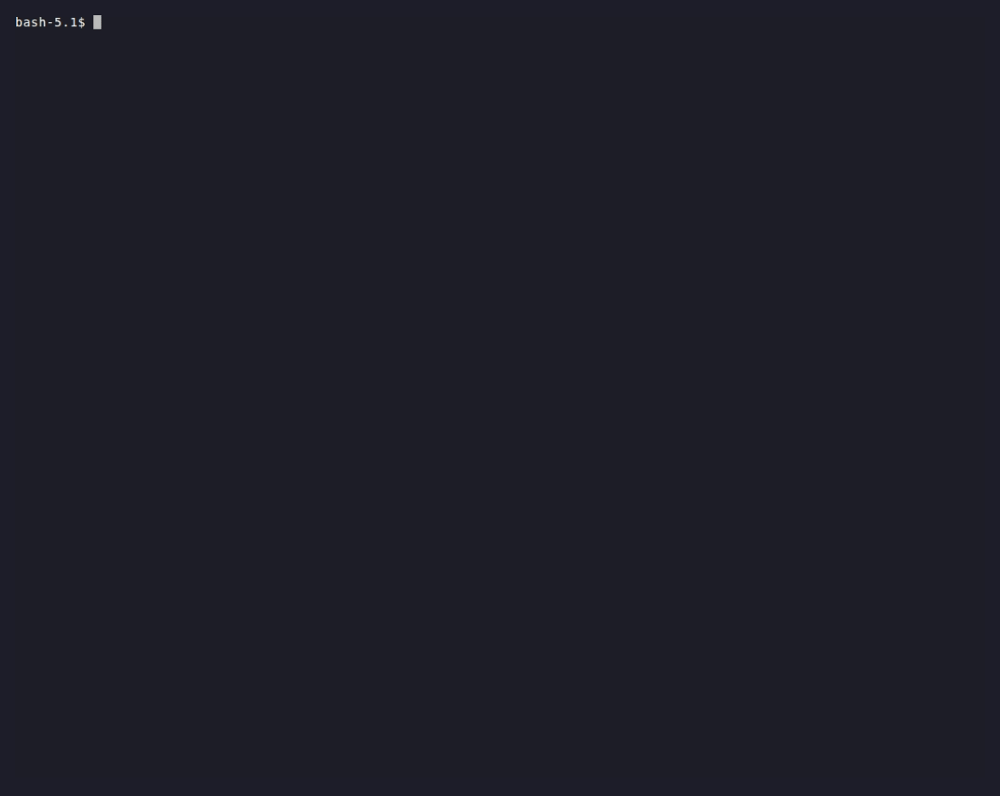

Примеры¶
В examples/ живут шестнадцать работающих приложений (в репозитории, не в
пайплайне сборки). Это эталонные реализации рецептов,
паттернов и port-матрицы — канонические примеры
разбиты на пакет produce/ (стадии) + тонкие web.py/chat.py/main.py.
Все демо работают и с ключами API, и без них: настройте .env (скопируйте
.env.example) ради LLM/эмбеддера/изображений — или оставьте фолбэк на
детерминированный демо-режим.
Чат-демо с сессиями (knowledge, devops, research, repair) строят свой
web-слой на каноническом контракте reactifact.chat + reactifact.web — каждое
поставляет только доменные хуки (агенты, входная модель, терминальный ответ),
а SSE-транспорт и сохранение сессий берёт из фреймворка. Порты (reflection …)
и adaptive по замыслу — только CLI.
Учебная лестница¶
llm_ladder— рекомендуемая точка входа: рабочий процесс LLM от одного вызова (уровень 1) через патчи артефактов (уровень 2) до полноценной сессии с жизненным циклом (уровень 3). Самодостаточно, офлайн-фолбэки, режим модели через.env. См. index.
starter_app — копипастибельное веб-приложение поверх quick-кейсов¶
Что показывает: один FastAPI-процесс, который можно склонировать и
запустить: структурированный вызов, RAG с цитатами, LLM с тулами и чат с
сессиями — плюс дашборд трасс по всем запускам. Это тонкая надстройка над
reactifact.quick, а провайдер выбирается from_env(): без
ключа → офлайн/детерминированные фолбэки (RAG всё равно отвечает из
knowledge/ с цитатами); OPENROUTER_API_KEY → OpenRouter;
OPENAI_BASE_URL → любой OpenAI-совместимый эндпоинт. Копируй директорию и
меняй домен.
knowledge — мультиисточниковый чат с доказательствами¶
Что показывает: поиск fan_out_sources по файловым и CSV-источникам →
ленивую materialize_doc → извлечение доказательств → проверку утверждений →
ответ с провенансом; детерминированный CSV-расчёт (Spreadsheet → Calculation).
uv run python ./examples/knowledge/web.py # FastAPI/SSE + трейс-дашборд
uv run python ./examples/knowledge/chat.py # интерактивный CLI
Ключевые файлы: produce/ (common, router, search, evidence, calc, lifecycle),
agents.py, web.py.
research — выходит в веб¶
Что показывает: WebSource с настоящим поиском URL; ленивое разрешение
страниц только для тех, что модель оценила релевантными; доказательства →
проверенные утверждения → ответ с URL-провенансом; StatusMachine жизненного
цикла хода.
medic-lab — лаборатория гипотез¶
Что показывает: один вопрос рождает конкурирующие гипотезы; каждая исследуется
по пулу доказательств; скорится по числу подтверждений/опровержений (скор
вычисляется, а не угадывается); HITL-управление через PendingQuestion;
честный отчёт при нехватке доказательств; concurrency_limit (LLM-агенты = 2,
глобальный лимит = 6).
devops — инструментальный агент с HITL¶
Что показывает: HITLLMAgent + LLM-роутер инструментов (маршрутизация —
отдельный структурный шаг, StructuredLLM), мутации Kubernetes/GitLab/Ansible с
подтверждением человеком (каждая — необратимая операция, которую LLM не может
выдумать сам); трейс-дашборд на create_trace_router.
incident_commander — полный харнесс, собранный воедино¶
Что показывает: все харнесс-уровневые блоки, собранные в одном сценарии
вместо пяти разрозненных демо — ветвление и слияние (Context.branch()/
merge(), §39-§40), каждое релевантное место расследуется независимо на
своём форке — релевантное решает детерминированный keyword-классификатор,
а не «форкать всегда всё», — делегирование саб-агенту
(agent_tool.AgentAsTool, DBA-специалист на форке базы данных),
ограниченный по токенам rolling-синтез
(context_builder.TokenBudgetContextBuilder), approval gate для
деструктивного инструмента (tool_use.ToolUseHITL, реальный фикс ждёт
подтверждения да/нет), и инлайн-верификация перед закрытием инцидента
(verify.Verify, provenance_grounded обязателен). Работает полностью
офлайн через скриптованный провайдер (у ToolUseHITL's decision loop нет
собственного офлайн-фолбэка) или с реальным ключом.
uv run python -m examples.incident_commander.main
uv run python -m examples.incident_commander.main --context-max-tokens 30
repair — перепланирование под бюджет (русский по замыслу)¶
Что показывает: чат и данные каталога намеренно на русском — контраст с
другими англоязычными примерами сознателен (локализация — продуктовый вопрос, не
вопрос фреймворка). Поток: сбор фактов → варианты дизайна от LLM → 3 фото-превью
→ план → детерминированная смета из каталога → HITL-одобрение → жалоба на
бюджет запускает пересборку с более ранней стадии с откатом через
_downstream_resets. Явное детерминировано; LLM — только там, где это
действительно генерация.
forklab — ветвление и слияние (§39-§40)¶
Что показывает: детерминированное исследование альтернативных состояний —
один вопрос, две стратегии исследования на собственных форках
(Context.branch()); трёхсторонний merge(), который либо чисто объединяет,
либо бросает явный MergeConflict (§40 — никакого молчаливого выбора);
оценщик слиянного состояния, чей Answer связан supported_by с находками
обеих веток. Полностью офлайн (§67) — дело в семантике состояния, а не в
модели. Флаг --conflict демонстрирует цикл «конфликт → политика разрешения».
uv run python -m examples.forklab.main # счастливый путь
uv run python -m examples.forklab.main --mermaid # граф провенанса слияния
uv run python -m examples.forklab.main --conflict # явный MergeConflict + политика
Тот же паттерн — естественная основа для переписывания medic-lab: гипотезы
становятся настоящими форками вместо tag-маршрутизации каналов.
ledger — минимальный пересчёт (реактивный граф зависимостей)¶
Что показывает: крошечная модель стоимости (часы × ставка → стоимость
труда → налог/скидка → итог), сделанная, чтобы доказать одну мысль конкретно,
цифрами: зависимости объявляются на типах артефактов через Consume, а не
проводами между узлами, делящими один блоб состояния — поэтому правка одного
факта пересчитывает ровно то, что реально его потребляло, и ничего больше.
Artifact.version — доказательство: формула, которая не потребляла
изменённый факт, для этой правки вообще не вызывается, а не «вызвана и решила
не обновляться». Без LLM, полностью детерминировано (§67) — тот же дух
офлайн-доказательства, что и у forklab, но про реактивную инвалидацию, а не
про branch/merge.
fintech_audit — аудируемый и воспроизводимый ответ¶
Что показывает: финансовый вопрос («какова вариация cloud-расходов за Q2
и требует ли политика одобрения?») с ответом из CSV транзакций, CSV бюджета и
документа политики. История аудита целиком: цифры считаются на чистом Python
(модель — не источник истины, §67); каждый производный артефакт ссылается на
то, откуда он взялся; reactifact.audit.build_report рендерит ответ с
хешем содержимого каждого артефакта и context_sha256 всего запуска; а
повторный прогон даёт тот же хеш — это и проверяет
reactifact replay <store> --session <id> --verify <hash> на сохранённой
сессии. Офлайн, без ключа.

См. также reactifact/audit.py (build_report,
context_hash, report_to_markdown) и Наблюдаемость —
как отправить такой запуск в приёмник с redactor=.
support_copilot — обоснованный ответ или эскалация, без галлюцинаций¶
Что показывает: поддержка-агент с двумя честными исходами — документы
покрывают вопрос → обоснованный ответ из текста найденного документа со ссылкой
через провенанс supported_by; ничего не совпало → рантайм эскалирует
человеку (effects.ask(...) → PendingQuestion), и ответ человека становится
ответом. «Не знаю» — это полноценное состояние, а не выдуманный ответ. Модель не
требуется.
repo_agent — кодинг-агент за approval-гейтом¶
Что показывает: LLM + тулы, где git_commit объявлен
@tool(destructive=True) — модель может решить его вызвать, но рантайм
превращает это в PendingQuestion(kind="approve") и выполняет коммит только
после человеческого resume. Безопасные тулы (read_file, run_tests)
выполняются свободно. Гейт — свойство Tool, а не промпта, поэтому держится
независимо от вывода модели. Офлайн (scripted-провайдер, локальные тулы).
adaptive — гибридное планирование¶
Что показывает: адаптивный планировщик (reactifact.scheduler) в деле —
жёсткие фильтр-правила отсекают capability, детерминированная метрика ранжирует
остальные, опциональный LLM развязывает ничьи, rank_limit ограничивает число
реально запускаемых агентов; HITL-агенты закреплены, никто не голодает.
uv run python -m examples.adaptive.main # "money" → выбран: b
uv run python -m examples.adaptive.main --tag x # правило отсекает b
Канонические порты (офлайн-мини-демо)¶
Компактные, самодостаточные порты классических паттернов агентов — каждый
запускается uv run python -m examples.<имя>.main и сопоставлен в
port-матрице. plan_execute, supervisor и reflection
дополнительно несут main_recipe.py, который гоняет тот же сценарий на
соответствующем классе из reactifact.recipes
(python -m examples.<имя>.main_recipe) — сравните оба файла, чтобы увидеть,
что именно берёт на себя рецепт.
reflection— генерация → критика → регенерация черновика до прохождения гарда.map_reduce— разбить документ на куски, produce на каждом, затем агрегация (fan_out+combine).supervisor— супервизор делегирует специализированным produce (HITL-одобрения).summarize— суммаризация памяти разговора (короткое → длинное окно).time_travel—Context.branch(), две стратегии параллельно, трёхстороннийmerge().plan_execute— планировщик формирует упорядоченные шаги, исполнитель выполняет ровно один шаг за поколение, гейтуясь результатом предыдущего, финишер собирает ответ, когда готовы все шаги; см. паттерны.
Тесты¶
.venv/bin/python -m pytest # 543 тест (2 пропущены без TEST_PG_DSN)
.venv/bin/mypy # строгая типизация по всему репозиторию
.venv/bin/ruff check # линтер
uv sync ставит группы dev+web из pyproject.toml; uv build собирает только
wheel reactifact (примеры и docs в пакет не входят).